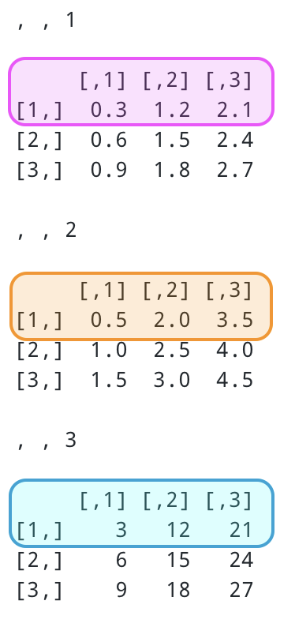
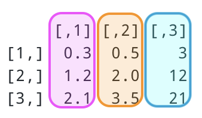

Subsetting and Flow Control Statements
1 Objectives
This section contains a basic overview of R’s subsetting syntax ([[, [, and $) and flow control functions (if, ifelse, and switch), and how they can be used to control data workflows.
2 Packages
library(tidyverse)3 Subsetting
Subsetting is an important topic because it’s how we can get access to the information stored in R objects. Inevitably we’ll end up with some kind of data stored in some kind of object, and in order to do anything to that data, we need to access it.
3.1 Vectors
Vectors are the fundamental data type in R. Below we assign five numbers to the vector vec.
num_vec <- c(2, 9, 4, 3, 7)
num_vec
#> [1] 2 9 4 3 7These five numbers exist in five different positions within the vector, and we can subset them using a bracket with the numerical index.
3.1.1 using []
Here are the numbers located at positions [1] and position [5]
num_vec[1]
#> [1] 2
num_vec[5]
#> [1] 73.1.2 using :
If we want a range of values from num_vec, we can use the colon in the index:
num_vec[1:3]
#> [1] 2 9 4This is returning a ‘subvector’ of num_vec consisting of elements 1 through 3.
str(num_vec[1:3])
#> num [1:3] 2 9 4
is.vector(num_vec[1:3])
#> [1] TRUE3.1.3 using [] with c()
We can also use vectors to subset other vectors. The code below returns the same result as num_vec[1:3]:
num_vec[c(1, 2, 3)]
#> [1] 2 9 4We can also create a new vector, and use this to subset num_vec.
x <- c(1, 2, 3)
num_vec[x]
#> [1] 2 9 43.1.4 [] vs. <-
So far, we’ve been subsetting num_vec in a way that only returns the requested elements. If we wanted to subset num_vec and store the output in a new vector, we would need the assignment operator (<-):
small_num_vec <- num_vec[1:3]
small_num_vec
#> [1] 2 9 43.2 Matrices
We’ll now move into subsetting higher-dimensional objects. We went over these objects in a previous lesson.
3.2.1 create a matrix
Here we create mat_data, a matrix with 3 rows and two columns. We also supply a set of dimnames.
mat_data <- matrix(
data = c(0.2, 0.4, 0.8, 5, 15, 150),
nrow = 3,
ncol = 2,
dimnames = list(
c("row_1", "row_2", "row_3"),
c("col_1", "col_2")
),
byrow = FALSE
)
mat_data
#> col_1 col_2
#> row_1 0.2 5
#> row_2 0.4 15
#> row_3 0.8 150We can see this is a two-dimensional object with rows and columns.
3.2.2 using [, ]
To subset a matrix, the syntax is object[row, column]. So if we wanted the number at the intersection of the third row and second column (150), we can pass these positions inside brackets [3, 2].
mat_data[3, 2]
#> [1] 150If we only want a single row or column from mat_data, we can omit the second number index:
mat_data[3, ]
#> col_1 col_2
#> 0.8 150.0
mat_data[, 2]
#> row_1 row_2 row_3
#> 5 15 1503.2.3 using [] with c()
We can also control how the matrix elements are returned. If we want to access the second and first rows of mat_data (in that order), we can pass c(2, 1) inside [] and R will return both columns.
mat_data[c(2, 1), ]
#> col_1 col_2
#> row_2 0.4 15
#> row_1 0.2 5It’s also important to note that if we subset a matrix in a way that returns a single element, it will return a vector.
mat_data[2, 1]
#> [1] 0.43.3 Arrays
Arrays contain a collection of equal-dimension matrices. Just like matrices, they have fixed number of rows and columns, but they also have a third dimension called a layer. See the image below for conceptual illustration a three-row, three-column, two-layer array (3 × 3 × 2).

3.3.1 create an array
Now we’ll create an array (array_dat) with 3 columns, 3 rows, and 3 layers.
array_dat <- array(
data = c(
seq(0.3, 2.7, by = 0.3),
seq(0.5, 4.5, by = 0.5),
seq(3, 27, by = 3)
),
dim = c(3, 3, 3)
)
array_dat
#> , , 1
#>
#> [,1] [,2] [,3]
#> [1,] 0.3 1.2 2.1
#> [2,] 0.6 1.5 2.4
#> [3,] 0.9 1.8 2.7
#>
#> , , 2
#>
#> [,1] [,2] [,3]
#> [1,] 0.5 2.0 3.5
#> [2,] 1.0 2.5 4.0
#> [3,] 1.5 3.0 4.5
#>
#> , , 3
#>
#> [,1] [,2] [,3]
#> [1,] 3 12 21
#> [2,] 6 15 24
#> [3,] 9 18 273.3.2 using []
As the number of dimensions increase, so do the number of commas required for subsetting. If we want the third row of the second layer of array_dat, we would use the following:
array_dat[3, , 2]
#> [1] 1.5 3.0 4.5Note that this returns a vector.
3.3.3 using [] with c()
We can also use a vector to subset the array_dat by index (or position). Below we get the first row and third and second columns (in that order) of layer two.
array_dat[1, c(3, 2), 2]
#> [1] 3.5 2.03.3.4 Return behavior
If we only supply a single row array_dat[1, , ], we will see R returns the rows as a column in a single matrix. They are also arranged by columns, not rows.
array_dat[1, , ]
#> [,1] [,2] [,3]
#> [1,] 0.3 0.5 3
#> [2,] 1.2 2.0 12
#> [3,] 2.1 3.5 21Here is the original arrangement of the first rows:

And here is the returned matrix, presented as columns:

3.4 Data frames/tibbes
Data frames and tibbles are rectangular representations of data (like spreadsheets). Data frames and tibbles contain vectors of equal length.
3.4.1 create a data.frame/tibble
To create the Simpsons data.frame we can use the following function:
Simpsons <- data.frame(
character = c("Homer", "Marge", "Bart", "Lisa"),
age = c(39, 36, 10, 8),
sex = factor(c("Male", "Female", "Male", "Female"))
)
str(Simpsons)
#> 'data.frame': 4 obs. of 3 variables:
#> $ character: chr "Homer" "Marge" "Bart" "Lisa"
#> $ age : num 39 36 10 8
#> $ sex : Factor w/ 2 levels "Female","Male": 2 1 2 1To create the AmericanDad tibble we can use the following function:
AmericanDad <- tibble::tribble(
~character, ~age, ~sex,
"Stan", 42, "Male",
"Francine", 40, "Female",
"Steven", 15, "Male",
"Hayley", 19, "Female"
) %>%
# convert to factor
mutate(sex = factor(sex, levels = c("Female", "Male")))
str(AmericanDad)
#> tibble [4 × 3] (S3: tbl_df/tbl/data.frame)
#> $ character: chr [1:4] "Stan" "Francine" "Steven" "Hayley"
#> $ age : num [1:4] 42 40 15 19
#> $ sex : Factor w/ 2 levels "Female","Male": 2 1 2 13.4.2 using $
The dollar sign ($) can be used to subset named vectors.
Simpsons$character
#> [1] "Homer" "Marge" "Bart" "Lisa"Note that both of these return vectors.
AmericanDad$character
#> [1] "Stan" "Francine" "Steven" "Hayley"3.4.3 using []
We can use the row and column index to subset data frames and tibbles just like matrices and arrays.
# homer's age
Simpsons[1, 2]
#> [1] 39The output is a little different for subsetting tibbles:
# Stan's age
AmericanDad[1, 2]Note that when we subset the data frame with a value in the row index (i.e. Simpsons[ 2, ]), R returns a data frame. However, if we subset Simpsons with a value in the column index (i.e. Simpsons[ , 2]) we get a vector.
Simpsons[2, ]Simpsons[, 2]
#> [1] 39 36 10 8But when we subset a tibble, both return a tibble:
AmericanDad[2, ]AmericanDad[, 2]The same is true if we supply values to both rows and column indexes.
# check structure
Simpsons[1, 2] # Homer's age
#> [1] 39
AmericanDad[1, 2] # Stan's age3.4.4 using [] & c()
We can use a numeric index for rows along with the names of the vectors (or columns) to subset data frames and tibbles:
# Lisa's age and sex
Simpsons[4, c("age", "sex")]Note that the Simpsons data frame gives us a row-name (4), while the AmericanDad tibble only returns the two columns.
# Francine's age and sex
AmericanDad[2, c("age", "sex")]3.4.5 using $ and []
Because the dollar-sign returns a vector, we can subset this output by combing it with brackets ([])
# Bart's age
Simpsons$age[3]
#> [1] 10Both of these return a vector.
# Steven's age
AmericanDad$age[3]
#> [1] 153.4.6 using $ & ==
We can combine $ with == to return a logical vector:
Simpsons$age == 36
#> [1] FALSE TRUE FALSE FALSE
AmericanDad$age == 15
#> [1] FALSE FALSE TRUE FALSEWe can also pass $ and == a set of values with c() to return a logical vector.
Simpsons$age == c(39, 8)
#> [1] TRUE FALSE FALSE TRUE
AmericanDad$age == c(42, 40)
#> [1] TRUE TRUE FALSE FALSEThis might not seem very helpful, but it comes in handy when we combine this with [].
3.4.7 using [], $ and ==
Below we combine the logical output from $ and == with [] to subset data frames and tibbles:
# return Stan and Hayley's age and sex
AmericanDad[AmericanDad$age == c(42, 19), ]# return the rows in Simpsons where age is 36
Simpsons[Simpsons$age == 36, ]Again, we see the output from the data frame (Simpsons) returns a data frame with a row-name (2).
3.4.8 using [[]]
We can control the subsetted results for both tibbles and data frames using double brackets ([[]]).
Let’s review the behavior of single brackets. If we use a single bracket (without commas) and a numerical index, we get the first column in both Simpsons and AmericanDad as a rectangular object.
# character column from data frame
str(Simpsons[1])
#> 'data.frame': 4 obs. of 1 variable:
#> $ character: chr "Homer" "Marge" "Bart" "Lisa"
# character column from tibble
str(AmericanDad[1])
#> tibble [4 × 1] (S3: tbl_df/tbl/data.frame)
#> $ character: chr [1:4] "Stan" "Francine" "Steven" "Hayley"If we use double-brackets, we get the same first column, but as a vector.
# character column as vectors
str(Simpsons[[1]])
#> chr [1:4] "Homer" "Marge" "Bart" "Lisa"
str(AmericanDad[[1]])
#> chr [1:4] "Stan" "Francine" "Steven" "Hayley"3.5 Lists
Lists are special kinds of objects. Their contents can be items of different data types and lengths. Read more about lists in Advanced R.
3.5.1 create a list
Below we’ll create a list of lesser-known Star Wars characters called sw_list.
list(
name = c(
"Wedge Antilles", "Boba Fett",
"Mon Mothma", "Darth Maul", "Dud Bolt"
),
height = c(170L, 183L, 150L, 175L, 94L),
sex = factor(c(2L, 2L, 1L, 2L, 2L), labels = c("female", "male")),
films = list(
c(
"The Empire Strikes Back", "Return of the Jedi",
"A New Hope"
),
c(
"The Empire Strikes Back", "Attack of the Clones",
"Return of the Jedi"
),
"Return of the Jedi",
"The Phantom Menace",
"The Phantom Menace"
)
) -> sw_list
str(sw_list)
#> List of 4
#> $ name : chr [1:5] "Wedge Antilles" "Boba Fett" "Mon Mothma" "Darth Maul" ...
#> $ height: int [1:5] 170 183 150 175 94
#> $ sex : Factor w/ 2 levels "female","male": 2 2 1 2 2
#> $ films :List of 5
#> ..$ : chr [1:3] "The Empire Strikes Back" "Return of the Jedi" "A New Hope"
#> ..$ : chr [1:3] "The Empire Strikes Back" "Attack of the Clones" "Return of the Jedi"
#> ..$ : chr "Return of the Jedi"
#> ..$ : chr "The Phantom Menace"
#> ..$ : chr "The Phantom Menace"We can see the first few vectors in sw_list looks like a data.frame (name through films), but films has multiple lengths, because each character has been in a varying number of films.
3.5.2 using $
If we use the $ symbol, R returns the object according to type.
# heights
str(sw_list$height)
#> int [1:5] 170 183 150 175 94The films are stored as a list in sw_list, so using $ will return a list of character values (chr).
# films
str(sw_list$films)
#> List of 5
#> $ : chr [1:3] "The Empire Strikes Back" "Return of the Jedi" "A New Hope"
#> $ : chr [1:3] "The Empire Strikes Back" "Attack of the Clones" "Return of the Jedi"
#> $ : chr "Return of the Jedi"
#> $ : chr "The Phantom Menace"
#> $ : chr "The Phantom Menace"3.5.3 using [] & [[]]
There are two levels for subsetting lists with brackets: [] and [[]]. A great way to think about these two levels of subsetting is captured in the tweet below:
If the #rstats list “
x” is a train carrying objects, thenx[[5]]is the object in car5;x[4:6]is a train of cars4-6. One R Tip a Day [@RLangTip](https://twitter.com/RLangTip/)
So, if sw_list is the ‘train’, then sw_list[[4]] is the object in car 4.
# object in car 4
str(sw_list[[4]])
#> List of 5
#> $ : chr [1:3] "The Empire Strikes Back" "Return of the Jedi" "A New Hope"
#> $ : chr [1:3] "The Empire Strikes Back" "Attack of the Clones" "Return of the Jedi"
#> $ : chr "Return of the Jedi"
#> $ : chr "The Phantom Menace"
#> $ : chr "The Phantom Menace"And sw_list[4:6] is the train of cars 1-4
str(sw_list[1:4])
#> List of 4
#> $ name : chr [1:5] "Wedge Antilles" "Boba Fett" "Mon Mothma" "Darth Maul" ...
#> $ height: int [1:5] 170 183 150 175 94
#> $ sex : Factor w/ 2 levels "female","male": 2 2 1 2 2
#> $ films :List of 5
#> ..$ : chr [1:3] "The Empire Strikes Back" "Return of the Jedi" "A New Hope"
#> ..$ : chr [1:3] "The Empire Strikes Back" "Attack of the Clones" "Return of the Jedi"
#> ..$ : chr "Return of the Jedi"
#> ..$ : chr "The Phantom Menace"
#> ..$ : chr "The Phantom Menace"3.5.4 comparing $, [], and [[]]
Below we compare subsetting lists with $, [], and [[]]. We can see $ and [[]] return identical() objects.
# check $
str(sw_list$name)
#> chr [1:5] "Wedge Antilles" "Boba Fett" "Mon Mothma" "Darth Maul" ...
# check []
str(sw_list[[1]])
#> chr [1:5] "Wedge Antilles" "Boba Fett" "Mon Mothma" "Darth Maul" ...
# test for identical?
identical(x = str(sw_list$name), y = str(sw_list[[1]]))
#> chr [1:5] "Wedge Antilles" "Boba Fett" "Mon Mothma" "Darth Maul" ...
#> chr [1:5] "Wedge Antilles" "Boba Fett" "Mon Mothma" "Darth Maul" ...
#> [1] TRUEHowever, if we use [[]], we get a list.
str(sw_list[1])
#> List of 1
#> $ name: chr [1:5] "Wedge Antilles" "Boba Fett" "Mon Mothma" "Darth Maul" ...4 Flow Control Statements
Below we’ll cover R’s common flow control statements: if(), else(), and switch().
4.1 if
The if() statement can be used to control exactly what operations are carried out in a given chunk of code.
4.1.1 if() and cat()
Below is a straightforward if() statement that tests if a given condition is TRUE.
if (TRUE) {
cat("The if() condition is true")
}
#> The if() condition is trueWhat if we wanted to test if a certain vector value (y) was greater than 0?
x <- 2
if (x > 0) {
cat("x value is greater than 0")
}
#> x value is greater than 04.1.2 if() with else()
Now what if we wanted to our code to do something when the if condition was not satisfied?
Below we create y and set it equal to 5, then we test to see if x is greater than y. If it isn’t we print the second statement (and the value of y)
y <- 5
if (x > y) {
cat("x is greater than y")
} else {
cat("y is greater than x, because y = ", y)
}
#> y is greater than x, because y = 5We can extend the if() and else() conditions as far as we need. Change the value of y to 3 and run two logical tests to see what prints.
y <- 3
if (x > y) {# FALSE
cat("x is greater than y")
} else if (y > 4) {# FALSE
cat("y is greater than 4")
} else {# TRUE
cat("If x is < y, and y is > 4, What is x + y? ", sum(x, y))
}
#> If x is < y, and y is > 4, What is x + y? 5When testing if()/else() statements, I like to use comments to document what I should expect from each condition.
4.1.3 vectorized ifelse()
Recall that TRUE = 1 and FALSE = 0.
sum(FALSE, FALSE)
#> [1] 0
sum(TRUE, FALSE)
#> [1] 1
sum(TRUE, TRUE)
#> [1] 2We define a vector (conditions_01) with multiple values.
conditions_01 <- c(0, 1, NA, FALSE, TRUE)
conditions_01
#> [1] 0 1 NA 0 1writeLines(
ifelse(test = conditions_01,
yes = "condition is met",
no = "condition is not met"
)
)
#> condition is not met
#> condition is met
#> NA
#> condition is not met
#> condition is metThe ifelse() condition is tested across all the values in conditions_01 to returns the yes or no result.
Had we simply used an if() and else() statement, we get a warning because it’s only testing the first element in conditions_01.
if (conditions_01) cat(" condition met ") else cat(" condition not met ")
#> condition not metThis is because the actual condition being tested is length(conditions_01) > 1. We can see below this is FALSE, so the second result is returned.
# recall frist element in conditions_01
conditions_01[1]
#> [1] 0
# check length
length(conditions_01[1]) > 1
#> [1] FALSE4.2 switch
We can use switch() in place of nested if else statements to select among several alternative results.
switch(EXPR = , ... = )The EXPR in switch() must evaluate to a number or a character vector of length 1.
4.2.1 re-write nested ifelse
Consider the nested if else statement below:
# define string value
am_dad_char <- "Steven"
am_dad_char
#> [1] "Steven"
if (am_dad_char == "Stan") {
am_dad_age <- 42
} else if (am_dad_char == "Francine") {
am_dad_age <- 40
} else if (am_dad_char == "Steven") {
am_dad_age <- 15
} else if (am_dad_char == "Hayley") {
am_dad_age <- 19
} else {
am_dad_age <- NA
}
# return age
am_dad_age
#> [1] 15We can re-write this as a switch() statement, with the EXPR as am_dad_char. The alternative results are listed with each character’s age in AmericanDad
switch(EXPR = am_dad_char,
"Stan" = 42,
"Francine" = 40,
"Steven" = 15,
"Haley" = 19
)
#> [1] 154.2.2 switch() alternatives
While the EXPR needs to be either a string or numeric value, the alternatives (...) can be multiple types. See the examples below:
# switch on a string?
switch("string",
"string" = "text",
"logical" = TRUE,
"number" = 15)
#> [1] "text"
# switch on a logical?
switch("logical",
"string" = "text",
"logical" = TRUE,
"number" = 15)
#> [1] TRUE
# switch on a number?
switch("number",
"string" = "text",
"logical" = TRUE,
"number" = 15)
#> [1] 15